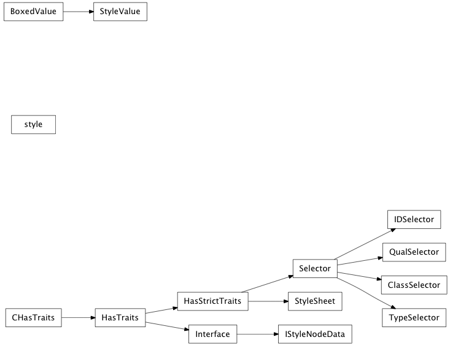

Bases: tuple
A tuple subclass which represents an rgba color value.
Convert a string to an enaml Color instance.
| Parameters: | color_string (str) – String describing color in hexadecimal format or a CSS color name. The hex formats supported are #rrggbb and #rrggbbaa. |
|---|---|
| Returns: | color (Instance(Color)) – The rgba color tuple representation in enaml. |
Note
The color names supported are the 147 specified by the SVG color standard: http://www.w3.org/TR/SVG/types.html#ColorKeywords Plus an Enaml defined ‘error’ color. All of the named colors are fully opaque.

Bases: object
A lightweight object which boxes another object.
Bases: enaml.styling.style_sheet.BoxedValue
A BoxedValue subclass that is used by the style sheet when returning style matches. This allows other application code to distinguish between values retrieved from the style sheet and values provided by the user.
list of weak references to the object (if defined)
Bases: object
An object which represents a style declaration in a style sheet.
Bases: traits.has_traits.Interface
An interface used by the style sheet selectors to query for the styling information required to perform a match.
Returns an IStyleQuery object for the parent element of the element being styled.
alias of __NoInterface__
Bases: traits.has_traits.HasStrictTraits
A Selector for use in the StyleSheet.
The base Selector class is used as the default match-all selector. Subclasses can override the match() method to implemented more restrictive selectors.
The style properties for this match.
A integer which is modified by the style sheet to maintain information about the order in which selectors appear.
A value that is incremented by the style sheet whenever the selector is updated. This helps to break ties between selectors that match with identical specificity.
| Methods | Description |
|---|---|
| match(style_query) | Returns a tuple of (specificity, is_match). |
Returns the match of the selector for the given query.
| Parameters: | node_data (IStyleNodeData) – An object for the node being styled which implements the IStyleNodeData interface. |
|---|---|
| Returns: | result (bool, (int, properties)) – If first return value is False, the selector does not match the node. Otherwise, the second return value is a tuple of (specificity, order, properties). |
alias of __NoInterface__
Bases: enaml.styling.style_sheet.Selector
A style selector which matches element types.
See Also
Selector
alias of __NoInterface__
Bases: enaml.styling.style_sheet.Selector
A style selector which matches style classes.
See Also
Selector
alias of __NoInterface__
Bases: enaml.styling.style_sheet.Selector
A style selector which matches type qualified classes.
See Also
Selector
alias of __NoInterface__
Bases: enaml.styling.style_sheet.Selector
A style selector which matches element ids.
See Also
Selector
alias of __NoInterface__
Bases: traits.has_traits.HasStrictTraits
An object representing a style sheet.
The style sheet is constructed with a sequence of ‘style’ objects which are then parsed into an internal dictionary of selectors. The value for a style property which matches style criteria can be retrieved through the ‘get_property’ method.
An event which is fired when the style sheet has changed. The payload of the event will be a set of property names that have been updated. This event is not fired when the sheet is first instantiated.
| Methods | Description |
|---|---|
| update(*styles) | Update the style sheet with the given style objects. This will trigger an ‘updated’ event. |
| replace(*styles) | Replace the style sheet with the give style objects. This will trigger an ‘updated’ event. |
Construct a style sheet object.
| Parameters: | styles (Sequence of ‘style’ objects.) – The style objects with which to populate the sheet. |
|---|
Update the style sheet with the given style objects.
This will trigger a ‘sheet_updated’ event.
| Parameters: | styles (Sequence of ‘style’ objects.) – The style objects with which to update the sheet. |
|---|
Replace the style sheet with the give style objects.
| Parameters: | styles (Sequence of ‘style’ objects.) – The style objects with which to populate the sheet. |
|---|
alias of __NoInterface__
Returns the style property for the given tag.
This method is used to query the style sheet for the value of a property for a particular node as described by the given style node data object.
| Parameters: | node_data (IStyleNodeData) – An object for the node being styled which implements the IStyleNodeData interface. |
|---|---|
| Returns: | result (style property or NO_STYLE) – Returns the style property for the most specific match of the sheet, or NO_STYLE if no match is found. |
Returns an iterable of all the tags in the style_sheet.